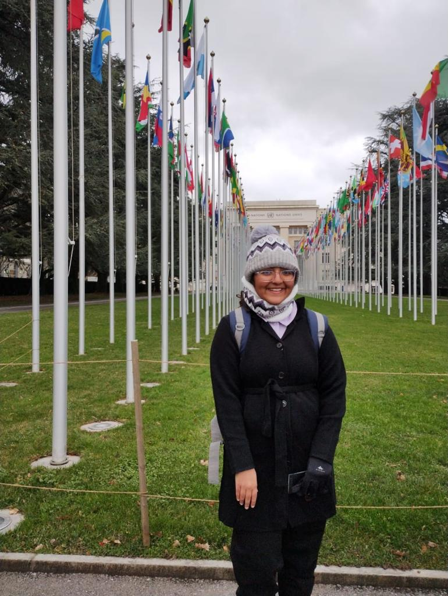
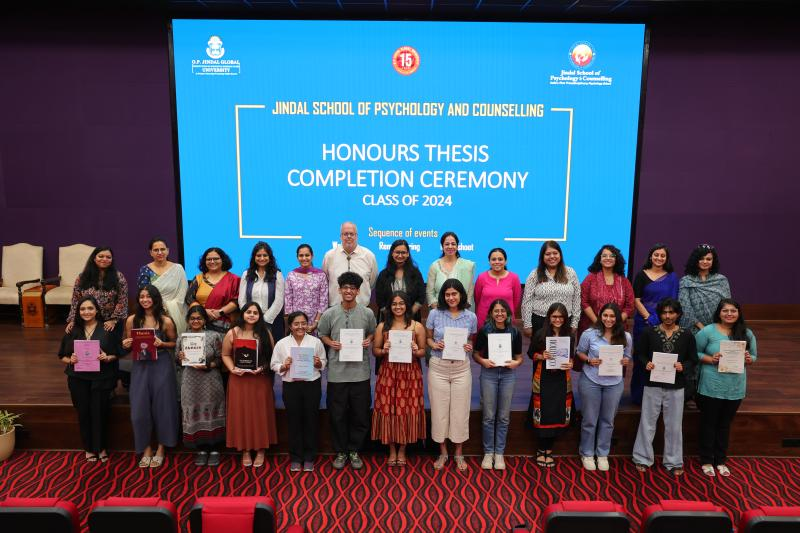
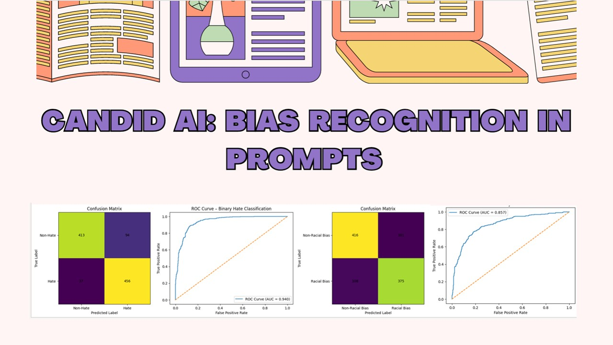
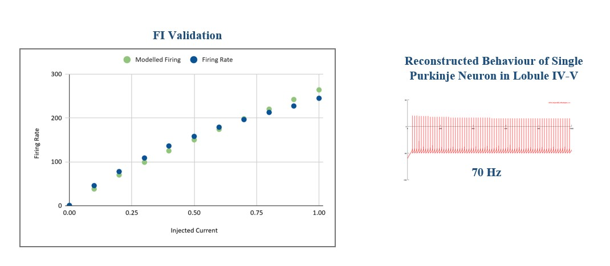
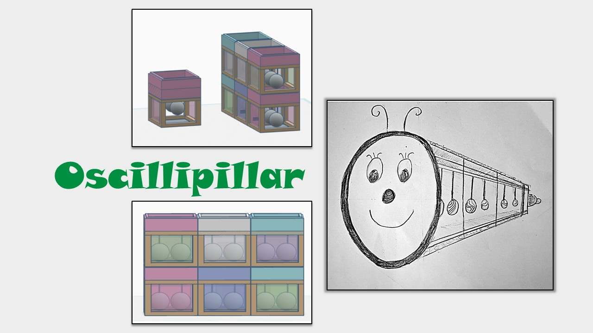
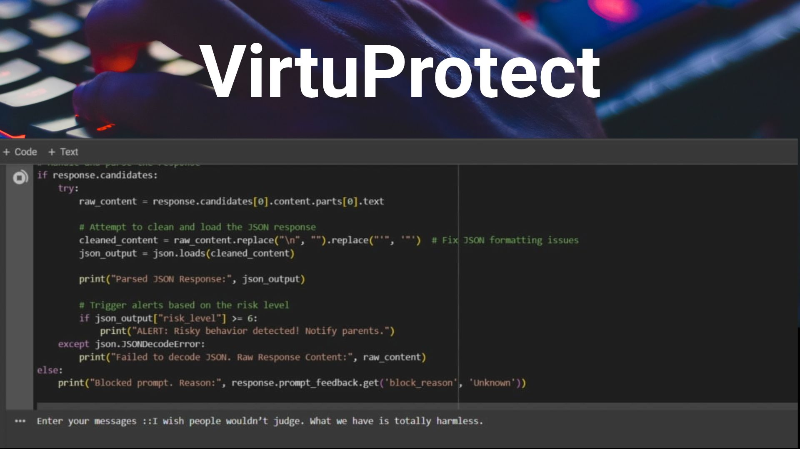

Honours Thesis
The Impact of Emotion in Visuospatial Working Memory
JSPC, OP Jindal Global University, 2024
MSc in Cognitive Science Learning and Technology
BA (Hons) in Psychology
Areas of Interest:
Affective Science
Human AI Interaction
Cognitive Sciences
Psychology
Questioning. Exploring. Discovering.

Delving deeper into Cognitive Science and Psychology has shown me that there is always more to understand about the human mind. I view human experience as dynamic and continuously shaped by culture, relationships, and interactions with the surrounding environment.
Throughout my studies, my curiosity about human phenomena and my inclination to examine them from multiple perspectives have remained constant. Through my research projects, I have explored emotions, memory, decision-making, and learning. I now hope to build on this foundation to better understand the cognitive and emotional dimensions of Human-AI Interaction.
I am particularly drawn to interdisciplinary environments where diverse perspectives can come together to examine complex questions. While my foundation is in the social sciences, my Master’s journey has introduced me to deep learning, computational neuroscience, neurophysiology, and prompt engineering, alongside practical technical skills. I am willing to learn beyond my existing expertise, take on unfamiliar challenges, and build new foundations when needed.
My commitment to social good has remained central to my journey. I am motivated to contribute to causes such as digital equity, mental health, ethical and responsible AI, neurodiversity, inclusive education, and sustainability. I hope to contribute to meaningful change by bringing together curiosity, interdisciplinary thinking, and a commitment to continuous learning.

The Impact of Emotion in Visuospatial Working Memory
JSPC, OP Jindal Global University, 2024
Global Gender Differences in Access to Technology Support
SSBS, Amrita Vishwa Vidyapeetham, 2025-2026
Understanding How Teachers Classify Students' Affective States Using Quantitative and Qualitative Data
SSBS, Amrita Vishwa Vidyapeetham, 2025–Present

Developed and managed the Cognitive Labyrinth Exhibition website using Google Sites, coordinating digital content and QR code integration for exhibition stalls in collaboration with station representatives.
Cognitive Labryinth Exhibition, International Conference of Gender and Technology 2025, Amrita Vishwa Vidyapeetham
Team: Students and faculty from MSc Cognitive Sciences, Learning and Technology (Amritapuri) and PG Diploma in Counselling Psychology (Coimbatore).
My Contributions: Lead Digital Coordinator
Cognitive Labyrinth ↗
Developed a transfer learning-based CNN to predict dog emotions across Indian and international breeds, comparing model performance using pretrained architectures such as EfficientNet and MobileNet.
Part of Deep Learning Course, Department of Cognitive Sciences and Psychology, Amrita Vishwa Vidyapeetham, 2025
Team: Kaavya, Tuba
My Contributions: Conceptualization, dataset identification, Google Colab coding, data visualization, MobileNet implementation, accuracy evaluation, stray dog image compilation and testing, and presentation.
Deep Learning Project ↗
Applied BERT-based models to detect hate speech and racial bias in AI prompts. The project explored the use of natural language processing and transformer-based models for identifying harmful and biased language in AI-generated text.
Part of NLP Course, Department of Cognitive Sciences and Psychology, Amrita Vishwa Vidyapeetham, 2025
Team: Kaavya, Varnika, Venkatesh, Chacko
My Contributions: Conceptualization, MBIB dataset integration, BERT fine-tuning, application of the trained model to AI prompt datasets, and presentation.
NLP Project ↗
Computationally modeled Purkinje and Deep Cerebellar Nucleus neuron dynamics in the cerebellar vermis using the Adaptive Exponential Integrate-and-Fire framework in NEURON, based on experimental studies.
Part of Computational Neuroscience Course, Mind Brain Centre, Amrita Vishwa Vidyapeetham, 2025
Team: Kaavya Lakshmi, Sruthi Santhosh Kumar, Lekshmi I
My Contributions: Literature review, research question formulation, selection of neuronal parameters using the AdEx model, computational modelling of Purkinje cells and the fastigial nucleus, analysis of observations, and presentation.

Participated in the Cognify toy design competition as part of a team. Designed Oscilipillar, an interactive, modular toy for children aged 3 to 5 years featuring oscillating, glitter-filled bobs that move like pendulums to capture visual attention and encourage coordinated eye movements.
Cognify - A Toy Design Contest, IIT Madras, 2024
Team: Kaavya, Steffy, Ajeetha
My Contributions: Ideation, sketching, 3D modelling, mechanism and stimulus design, and preparation of a technical report covering materials, costs, manufacturing processes, and developmental considerations.

Applied social science perspectives to the development of a generative AI model for detecting child grooming in online conversations.
GenAI × Gender Technology Hackathon, Team VirtuProtect, International Conference on Gender and Technology, Amrita Vishwa Vidyapeetham, Dec 2024
Team: Vishnuvardhan Chowdary, Kaavya Lakshmi, Cheerla, Jeevan Sai Karumuri, CB Harsha Vardhan, Arunima Krishna
My Contributions: Background literature review, conceptualization, ethical considerations, and video and document preparation.
I'd love to hear from you. Feel free to reach out with opportunities or just to connect.